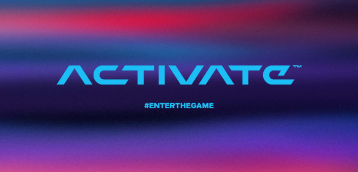

A four-month discovery and strategy engagement for Activate Games — evaluating whether a native mobile app was the right investment, and uncovering where the real opportunities for growth were.

Activate Games delivers a highly engaging in-person experience, but as the company expanded, leadership needed to determine whether investing in a native mobile app would create enough value to justify the cost and complexity.
As Lead UX Designer and Researcher, I led a discovery engagement to evaluate user needs, operational constraints, competitive trends, and technical feasibility — to determine whether a mobile app was the right strategic investment.
On-site observation, surveys, stakeholder interviews, competitive analysis, and a technology audit.
Journey maps, personas, affinity mapping, empathy maps, and service blueprints.
Product strategy, feature prioritization, and technology recommendations.
A mixed-method approach let us evaluate the full customer journey while understanding both operational realities and market expectations.
We ran in-depth interviews with first-time and returning guests, alongside frontline staff, to understand the full arc of a visit — from planning and arrival through play and follow-up. Interviews surfaced the emotional highs and the friction points that numbers alone couldn't explain.
A broader survey validated the interview themes at scale and quantified how often each friction point actually occurred. It let us separate loud-but-rare complaints from the issues affecting most guests — turning anecdotes into priorities we could act on with confidence.
Users wanted to return — they simply needed more information, control, and reasons to stay engaged between visits.— Consistent theme across every research method
Activate's closest competitors were already extending their experiences through mobile apps — suggesting an app wouldn't just meet user expectations, but create a foundation for long-term engagement.
Many guests struggled to understand the available games, rules, and features. Without effective onboarding, instructions, or accessibility support, confusion often became frustration.
Wait times were the strongest predictor of customer satisfaction. Guests wanted:
Repeat visits were driven less by discounts and more by novelty, competition, and shared experiences. Users wanted to:
Bartle's player types gave us a lens for understanding what motivates different guests — and which features each group would actually care about. By mapping opportunities to achievers, socializers, competitors, and explorers, we could see where a feature would land and for whom. These motivations carried directly into our personas, grounding each one in a distinct set of needs rather than demographics alone.
Each recommendation mapped directly back to both user needs and business goals.
Findings were shared after each research phase, allowing stakeholders to validate insights, influence priorities, and stay aligned throughout the process.
Continuous communication let us adapt the research approach as new findings emerged — while preserving confidence in the final recommendation.
Yes — building a mobile app was a strategically valuable investment.
The project gave leadership both a product strategy and a broader business strategy for future growth.
Strong discovery work requires a structured plan — but great discovery work adapts when new insights emerge. Being willing to pivot methods while maintaining rigor produced a stronger outcome than following a fixed process.
Technology limitations and operational workflows don't just influence design decisions — they often define them. Connecting technical constraints, business realities, and user needs helped me become a stronger strategic partner.